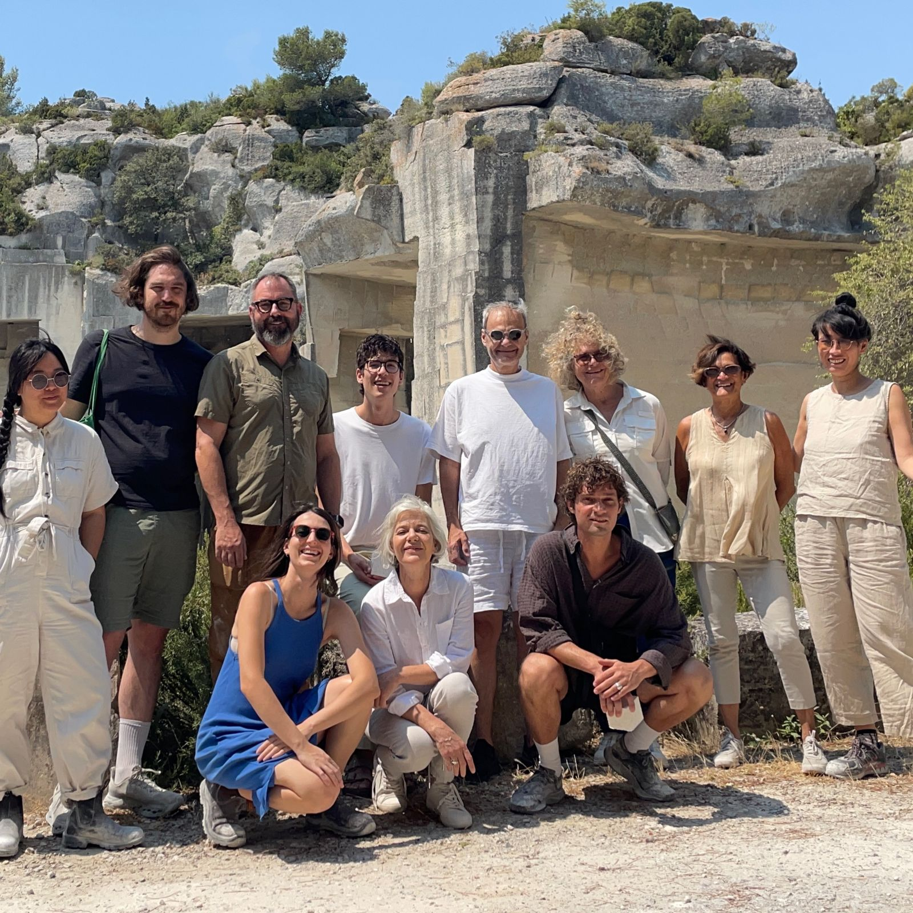

Cohort, in a quarryAtelier LUMA, Arles, summer 2026Biofabrique LA, with Professor Jia Yi Gu, 2026–
The materials that grow and are made around Los Angeles
I spent the summer of 2026 in a residency on bioregional materials at Atelier LUMA in Arles.
Back in California, I adapted that work into a method for mapping the material streams, suppliers and craftspeople of Southern California, to find where building and design could source locally.
I do this as the founding student researcher of Biofabrique LA, working with faculty from Harvey Mudd, MIT, USC and SCI-Arc, and with researchers at Atelier LUMA.
